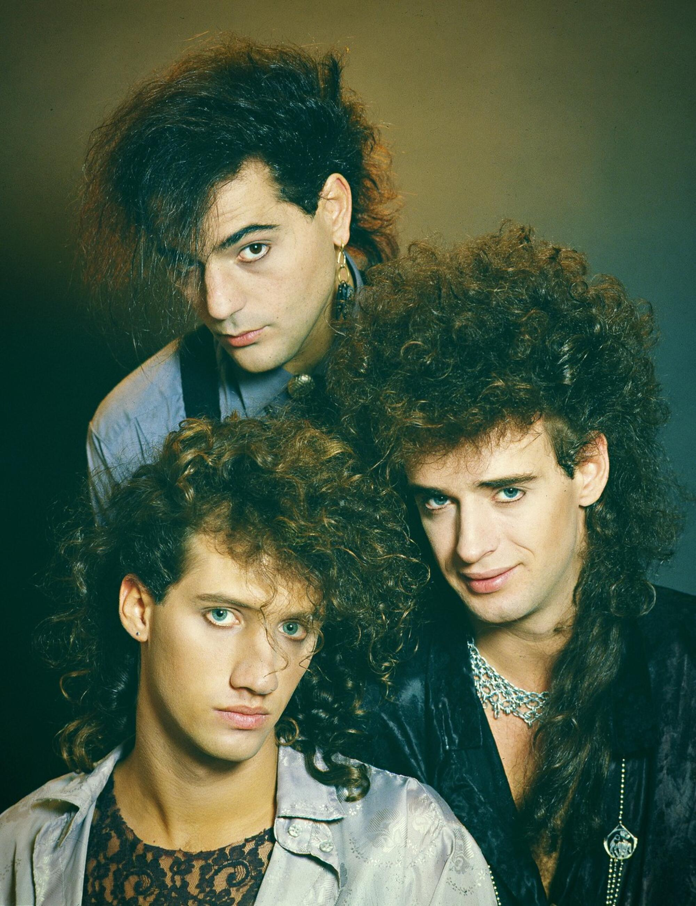

Mundo Sodero
Este blog está dedicado a Soda Stereo , una de las bandas más influyentes e importantes del rock en español. Formada en Buenos Aires en 1982 por Gustavo Cerati, Zeta Bosio y Charly Alberti , la banda marcó a toda una generación con su estilo innovador, sus letras profundas y su sonido único que combinaba rock, pop y new wave.
A lo largo de su trayectoria, Soda Stereo logró conquistar escenarios en toda América Latina y convertirse en un referente fundamental del rock latino. Canciones como “De Música Ligera”, “Persiana Americana” y “Cuando Pase el Temblor” se han convertido en clásicos que siguen siendo escuchados por millones de personas.En este blog encontrarás información sobre su historia, discografía, giras más importantes, premios y el legado que dejaron en la música. También podrás conocer curiosidades y datos interesantes sobre la banda que revolucionó el rock en español.
